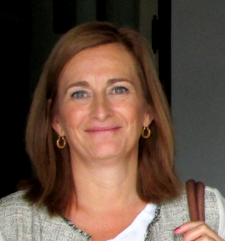
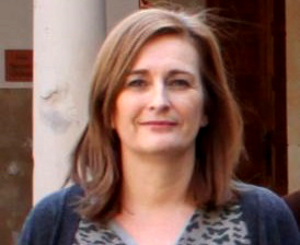

|
Covadonga Betegón Biempica es Ingeniera Industrial por la ETSII de Gijón en 1987 y Doctora Ingeniera Industrial por la Universidad de Oviedo en 1990, donde, desde 2007, es Catedrática en el Departamento de Construcción e Ingeniería de Fabricación. Investiga sobre la fractura elástica y elastoplástica, modelos micromecánicos de fractura, modelizaciones por elementos finitos del comportamiento de materiales y cálculo estructural avanzado.
Mientras estaba realizando el doctorado ingresó como profesora en el área de Mecánica de Medios Continuos y Teoría de Estructuras, del Departamento de Construcción e Ingeniería de Fabricación, de la Universidad de Oviedo, donde ha desarrollado su carrera académica, primero como Profesora ayudante, luego Asociada hasta 1992, cuando accedió a una plaza de Profesora Titular, que ocupó hasta 2007, cuando obtuvo una plaza de Catedrática de Universidad. Durante todos estos ańos ha llevado a cabo su actividad docente en asignaturas de las titulaciones de Ingeniería Industrial y de Telecomunicaciones, y más recientemente en el Grado de Ingeniería Mecánica, así como en el Máster Universitario en Integridad y Durabilidad de Materiales, Componentes y Estructuras por la Universidad de Oviedo, Universidad de Burgos y Universidad de Cantabria. |
 |
|---|
|  |
Empezó su carrera investigadora como becaria de investigación en la Universidad de Oviedo reci&eaute;n titulada, con la realización de su tesis Caracterización biparamétrica de los campos tensionales en la mecánica de la fractura elastoplástica, donde investigó por qué en determinadas estructuras, el parámetro que se utilizan tradicionalmente para describir el comportamiento a fractura no es válido. Se estableció además un nuevo parámetro, que junto con el tradicional, determina las condiciones de fractura de una estructura.
Su ámbito de investigación se ha centrado siempre en el estudio del comportamiento de metales sometidos a fractura, esto es, cómo se comportan elementos o estructuras metálicos en las que existe una grieta previa y las condiciones que hacen que dicha grieta se propague y produzca la fractura del elemento. |
|---|
|
Recibió en 1991 el Premio Extraordinario de Doctorado en Ingeniería Industrial. Hasta la actualidad ha participado en más de 20 proyectos de investigación financiados en convocatorias públicas, en la mitad de ellos como Investigadora principal, ha publicado más de 40 artículos científicos en revistas indexadas, participado en más de 40 contratos de transferencia con empresas y ha dirigido 5 tesis doctorales.
|
|---|